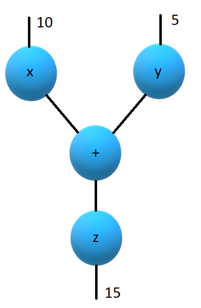

GPars meets Virtual Threads
Author: Paul King
Published: 2022-06-15 11:28AM (Last updated: 2023-04-14 06:23PM)
 An exciting feature coming in JDK21 is Virtual Threads
(JEP 444).
It has been previewed in JDK19 (JEP 425)
and JDK20 (JEP 436) but JDK21 will be the first version
that the feature is available without using Java’s preview switch.
The examples in this blog were tested with Groovy 4.0.11 using JDK version 21-ea+18-1480
(and using JDK19 with preview features enabled).
An exciting feature coming in JDK21 is Virtual Threads
(JEP 444).
It has been previewed in JDK19 (JEP 425)
and JDK20 (JEP 436) but JDK21 will be the first version
that the feature is available without using Java’s preview switch.
The examples in this blog were tested with Groovy 4.0.11 using JDK version 21-ea+18-1480
(and using JDK19 with preview features enabled).
Virtual threads work well with my favourite Groovy parallel and concurrency library GPars. GPars has been around a while (since Java 5 and Groovy 1.8 days) but still has many useful features. Let’s have a look at a few examples.
If you want to try these out, use the latest JDK21ea version which has virtual thread support as standard. Or use a recent JDK19-20 version and enable preview features with your Groovy tooling.
Parallel Collections
First a refresher, we’ll first look at using the GPars parallel collections feature with normal threads. Let’s start with a list of numbers:
var nums = [1, 2, 3]To calculate the list of squares of our original numbers in
parallel with normal threads, we use the GParsPool.withPool method as follows:
withPool {
assert nums.collectParallel{ it ** 2 } == [1, 4, 9]
}For any Java readers, don’t get confused with the collectParallel
method name. Groovy’s collect method (naming inspired by
Smalltalk) is the equivalent of Java’s map method. So, the
equivalent Groovy code using the Java streams API would be
something like:
assert nums.parallelStream().map(n -> n ** 2).toList() == [1, 4, 9]Now, let’s bring virtual threads into the picture. Luckily, GPars parallel collection facilities provide a hook for using an existing custom executor service. This makes using virtual threads for such code easy. First we create our pool (backed by virtual threads):
var vtPool = Executors.newVirtualThreadPerTaskExecutor()Now, we can use it as follows:
withExistingPool(vtPool) {
assert nums.collectParallel{ it ** 2 } == [1, 4, 9]
}Or we can use one of the other many '*Parallel' methods, in this case findAllParallel:
var isEven = n -> n % 2 == 0
withExistingPool(vtPool) {
assert (1..9).findAllParallel(isEven) == (2..8).step(2)
}Nice! Using virtual threads is very simple!
Let’s look at one more example, the FizzBuzz example:
var result = withExistingPool(vtPool) {
(1..15).collectParallel {
switch(it) {
case { it % 15 == 0 } -> 'FizzBuzz'
case { it % 5 == 0 } -> 'Buzz'
case { it % 3 == 0 } -> 'Fizz'
default -> it
}
}.join(',')
}
assert result == '1,2,Fizz,4,Buzz,Fizz,7,8,Fizz,Buzz,11,Fizz,13,14,FizzBuzz'Now, let’s move onto some examples which might be less familiar to Java developers.
GPars has additional features for providing custom thread pools
and the remaining examples rely on those features. The current
version of GPars doesn’t have a DefaultPool constructor that
takes a vanilla executor service; so, we’ll write our own class:
@AutoImplement
class VirtualPool implements Pool {
private final ExecutorService pool = Executors.newVirtualThreadPerTaskExecutor()
int getPoolSize() { pool.poolSize }
void execute(Runnable task) { pool.execute(task) }
ExecutorService getExecutorService() { pool }
}It is essentially a delegate from the GPars Pool interface
to the virtual threads executor service.
We’ll use this in the remaining examples.
Agents
Agents provide a thread-safe non-blocking wrapper around an otherwise potentially mutable shared state object. They are inspired by agents in Clojure.
In our case we’ll use an agent to "protect" a plain ArrayList.
For this simple case, we could have used some synchronized list,
but in general, agents eliminate the need to find thread-safe
implementation classes or indeed care at all about the thread
safety of the underlying wrapped object.
var mutableState = [] // a non-synchronized mutable list
var agent = new Agent(mutableState)
agent.attachToThreadPool(new VirtualPool()) // omit line for normal threads
agent { it << 'Dave' } // one thread updates list
agent { it << 'Joe' } // another thread also updating
assert agent.val.size() == 2Actors
Actors allow for a message passing-based concurrency model. The actor model ensures that at most one thread processes the actor’s body at any time. The GPars API and DSLs for actors are quite rich supporting many features. We’ll look at a simple example here.
GPars manages actor thread pools in groups. Let’s create one backed by virtual threads:
var vgroup = new DefaultPGroup(new VirtualPool())Now we can write an encrypting and decrypting actor pair as follows:
var decryptor = vgroup.actor {
loop {
react { String message ->
reply message.reverse()
}
}
}
var console = vgroup.actor {
decryptor << 'lellarap si yvoorG'
react {
println 'Decrypted message: ' + it
}
}
console.join() // output: Decrypted message: Groovy is parallelDataflow
Dataflow offers an inherently safe and robust declarative
concurrency model. Dataflows are also managed via thread
groups, so we’ll use vgroup which we created earlier.
For the sake of an example, we’ll create a scenario where two tasks are producing some results and a third task is adding the results of the other tasks.

We have three logical tasks which can run in parallel and perform their work. The tasks need to exchange data and they do so using dataflow variables. Think of dataflow variables as one-shot channels safely and reliably transferring data from producers to their consumers.
var df = new Dataflows()
vgroup.with {
task {
df.z = df.x + df.y
}
task {
df.x = 10
}
task {
df.y = 5
}
assert df.z == 15
}This code is declarative in style. We can specify the three tasks in any order. We aren’t giving any indication of which tasks should occur first. The dataflow framework works out how to schedule the individual tasks and ensures that a task’s input variables are ready when needed.
Conclusion
We have had a quick glimpse at using virtual threads with Groovy and GPars. It is still early days with virtual threads, so expect much more to emerge as JDK21 becomes more mainstream.